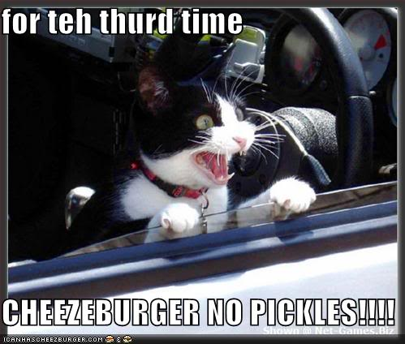

Home > Report an Abuse Landing Page > A Specific Abuse example
HELP SAVE THE DRIVE-THRU KITTY
REPORTED BY:
mycatsbetterthanyourcat
FOUND AT:
http://catsuponmyfries.com
WHAT WE KNOW:
So, this funny little dude was first seen on the Internets back in March, 2011, when the then four month old kitten was photo-shopped into a not-so-Happy-Meal. It's been a fast track thru fast food hell ever since.
From what we can tell, the cutie we'll call MacDonaldo, cuz of his cute Scottish collar, lives somewhere between Boulder and Colorado Springs. How do we know that? Studies have shown Coloradons have the highest rate of four exclamation point (over)use and yes, people do study such things.

This is where the type for the caption will go. Right now, the type is Myriad Pro Semibold, 11 on 12. It should stand out from the text for the rest of the story and that's why it is this cool shade of green.
If you have any idea who this cutie "belongs" to, click the SAVE ME button and help him redeem what little self respect he has left. If you're the owner of MacDonaldo (and we can only imagine what twisted name you've pushed him with), shame on you. And isn't it time you learned about healthy eating? Or are you just too lazy to lose that extra 120 pounds you're driving around around western Colorado?
Secondary link 01
Secondary and longer link 02
Secondary link 03
Secondary and linger link 04
Submenu 01
Submenu 02
Submenu 03
Secondary link 05
Secondary and longer link 06
Secondary link 07
Submenu 01
Submenu 02
Secondary and longer link 08
Secondary link 09
Secondary and longer link 10
Secondary link 11